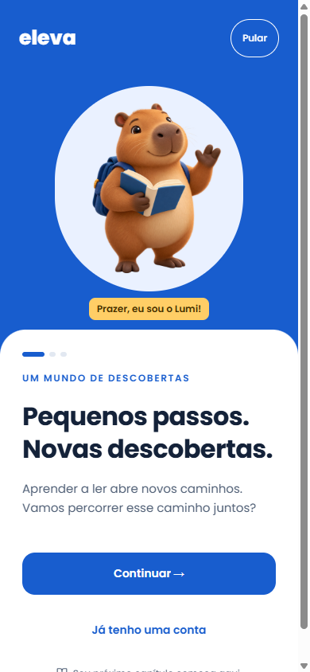
Três etapas, opção de pular e reabertura em Configurações.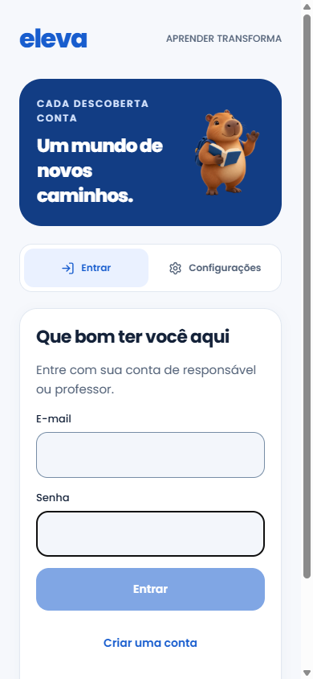
Cadastro, login e recuperação. Preferências fora do formulário.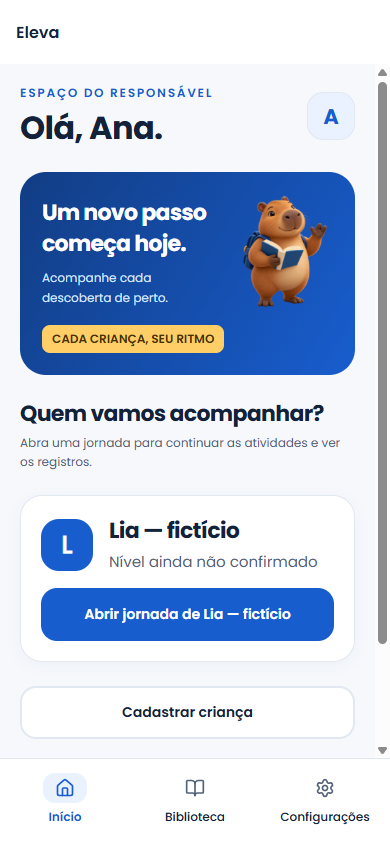
Criança selecionada explicitamente; cadastro e convites disponíveis.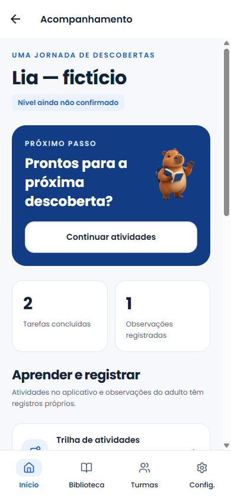
Avaliação, atividades, observação, histórico, relatório, IA, orientações e vínculos.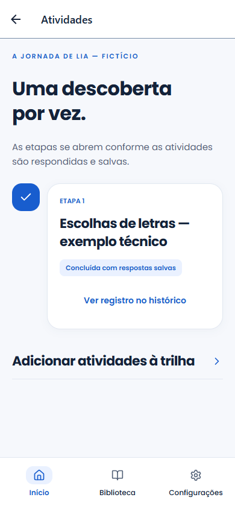
Sequência e conclusão verificadas pelo backend.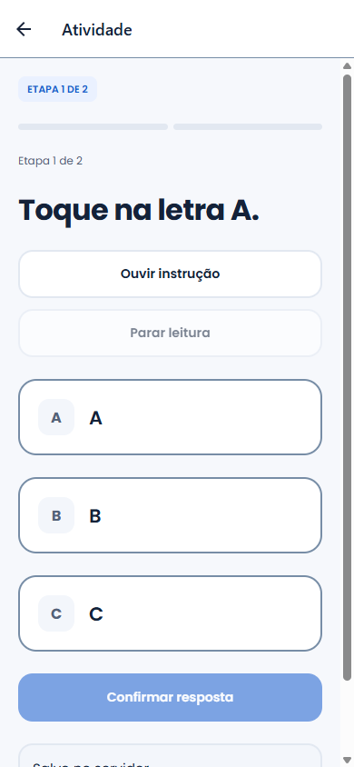
Um item por etapa. Leitura depende da permissão do conteúdo.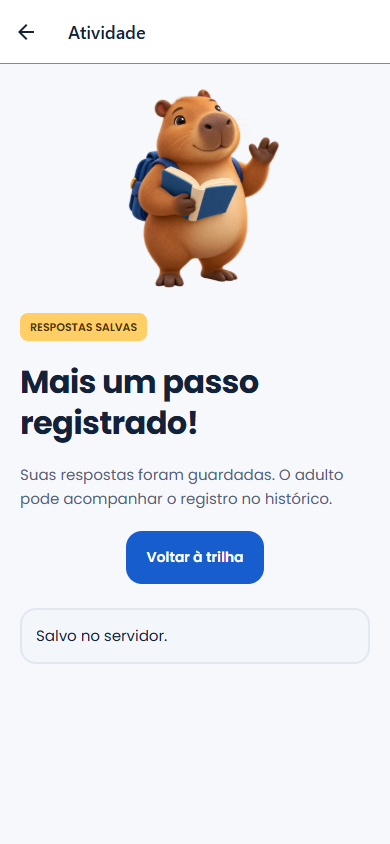
A confirmação aparece após a resposta de gravação, sem sugerir domínio pedagógico.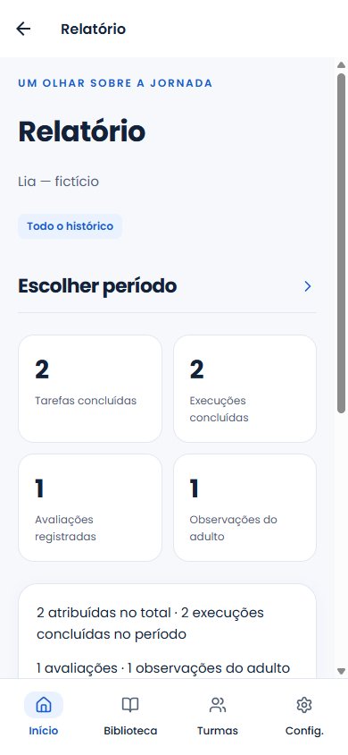
Contagens dos eventos reais de teste, sem percentual de alfabetização.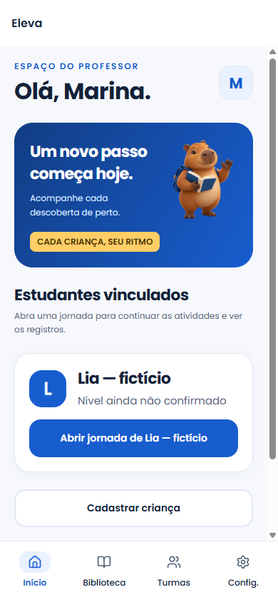
O perfil docente não concede acesso geral às crianças.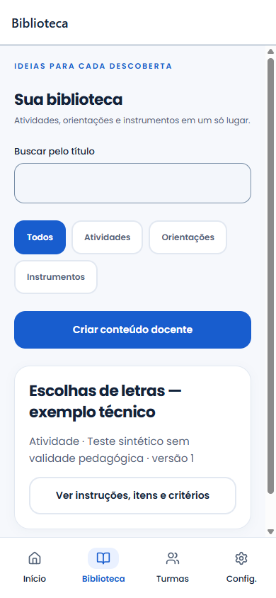
Autoria e revisão continuam separadas. Catálogo pedagógico aprovado pendente.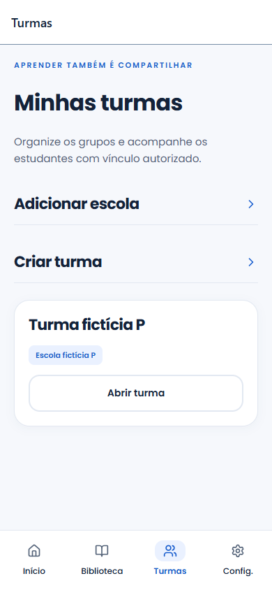
Escola, turma e relatório coletivo usam os vínculos autorizados.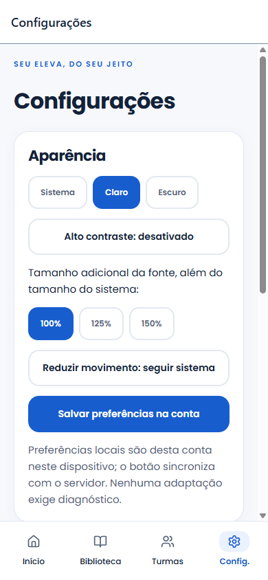
Claro/escuro/sistema, alto contraste independente, fonte, leitura e Libras.